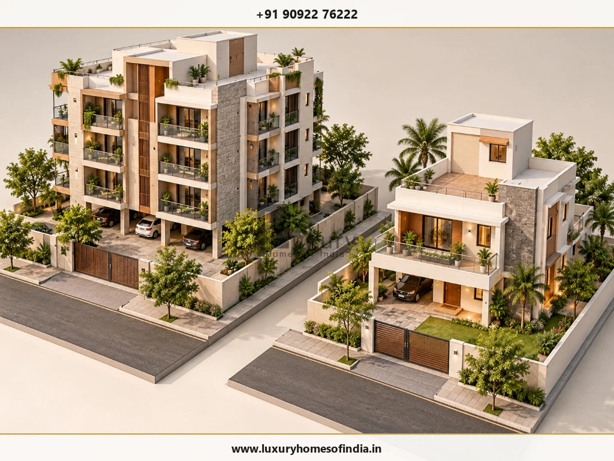

Joint Venture vs Own Construction in Chennai: Which Is Better for Landowners?
Owning land in Chennai gives you several ways to create a residential asset, but deciding how to develop it requires more than comparing construction costs. A joint development arrangement may allow you to contribute your land and receive an agreed share of the completed property, while independent construction gives you greater direct control over design, spending and ownership. The right choice depends on the land's value, permitted development, available capital, expected property use, project-management capacity and the terms of any proposed agreement. Before committing, compare the net value you could retain under each option, examine funding and completion risks, and obtain independent legal and tax advice. This guide explains the differences, financial considerations, contractual safeguards and practical alternatives for Chennai landowners evaluating joint development versus own construction.

1. Joint Venture vs Own Construction: At a Glance
The main difference is how you contribute resources, fund development, exercise control and retain the completed property.
| Factor | Joint Development with a Builder | Own Construction |
|---|---|---|
| Land | Contributed or made available under the agreed structure | Retained for independent development |
| Construction funding | Allocated according to the agreement | Generally arranged by the owner |
| Property retained | Agreed units, area, revenue or other consideration | Generally the completed property, subject to financing and other obligations |
| Design decisions | Governed by contractual rights and project structure | More direct owner control |
| Daily management | Often undertaken by the developer | Owner or appointed professionals coordinate the work |
| Main exposure | Developer performance, contractual and allocation risks | Funding, cost, coordination and execution risks |
| Potential benefit | Access to development capability without necessarily funding the entire project | Greater control over the asset and its future use |
Neither option is automatically more profitable or less risky. The comparison must account for the value of the land, the expected completed property, the owner's retained share, expenditure, timing and contractual protections.
2. What Is Joint Development in Real Estate?
In a common landowner–developer arrangement, the landowner makes land available for development, and the developer undertakes specified responsibilities in return for an agreed consideration. That consideration may include completed apartments or other units, a share of revenue, cash or a combination, depending on the agreement.
The term joint venture is sometimes used broadly in property discussions. However, a contractual joint development arrangement and a formally jointly owned business entity can have different legal and financial implications. The actual documents determine the parties' rights and obligations.
Common Arrangements
Area Sharing
The parties agree on the units or portions of the completed development allocated to each. The agreement should identify the allocation precisely and address specifications, parking, common areas and associated rights.
Revenue Sharing
The parties divide sale proceeds according to an agreed formula. The agreement should define the revenue base, permitted deductions, reporting, payment timing and how disputes are resolved.
A Jointly Owned Project Entity
The parties may use a separate legal entity to undertake the project. Funding, governance, ownership, decision-making and distribution rights depend on the entity's governing documents.
Key Takeaway
Before comparing proposals, establish which structure is actually being offered. The labels alone do not establish how much control, liability or financial exposure each party will have.
3. What Does Own Construction Mean?
Own construction means retaining control of the development decision and arranging the project through professionals or contractors you appoint.
You might engage an architect, structural engineer, quantity surveyor, construction company and other specialists according to the project's scope. A turnkey contract may delegate substantial execution responsibilities, while construction management or labour-only arrangements allocate responsibilities differently.
Independent construction can give you more direct influence over:
- Architectural design and space planning.
- Material specifications and finishes.
- Budget priorities and procurement decisions.
- The intended use of the completed property.
- Rental, occupancy or future sale decisions.
- Project phasing, where technically and legally feasible.
Greater control does not mean that the owner must personally manage every site activity. It does mean that the funding arrangements, contracts, decisions and oversight responsibilities need to be established clearly.
For a family home, the priority may be design flexibility and long-term use. For a multi-unit development, feasibility, funding, professional coordination and sales or rental strategy may become more significant.
4. Which Option Requires More Investment?
The answer depends on the project structure and the landowner's obligations.
Investment Under Joint Development
Where the developer is contractually responsible for funding construction, the landowner may avoid arranging the full construction budget personally. In exchange, the landowner generally gives up some agreed development value or accepts another defined consideration arrangement.
This is not a cost-free development route. The land is a valuable contribution, and the owner must evaluate what is being exchanged for the developer's work and funding. Consider the current market value of the land, the permitted development potential, the likely value of the owner's allocated units or revenue, the time required to receive them and the consequences of non-performance.
Investment Under Own Construction
Independent development typically requires the owner to arrange funds for the agreed scope. Depending on the project, the budget may include:
- Surveys, design and engineering.
- Applicable approval and statutory costs.
- Civil and structural construction.
- Electrical, plumbing and other building services.
- Waterproofing, finishes and external works.
- Professional fees, financing and contingency.
- Applicable taxes and other project-specific expenses.
A detailed bill of quantities (BOQ), clearly defined specifications and a written scope of work can help establish the planned expenditure. Actual costs depend on the site, design, scope and market conditions; a reliable estimate requires project-specific information.

5. Advantages and Risks of Joint Development
Potential Advantages
If the developer funds the agreed scope, the landowner may not need to finance the entire construction budget personally.
A capable developer coordinates consultants, contractors, procurement, approvals and construction activities.
The landowner carries less operational responsibility when the developer is accountable for execution.
Under an area-sharing arrangement, receive units for personal use, rental income or future sale.
Risks to Evaluate
Delays, inadequate funding, contractor disputes or incomplete work can directly impact the landowner.
Unclear unit allocation, specifications, parking or common-area rights can create contentious legal battles.
The developer controls procurement, materials, sub-contractors and site scheduling.
Revenue-sharing exposes receipts to sales timing, real estate downturns, and permitted deductions.
General Powers of Attorney (GPA), default terms, and mortgage encumbrances require rigorous safeguards.
A proposed development partner should be assessed for relevant completed work, financial capacity, references, project feasibility and willingness to accept clearly documented obligations. Independent legal advice should be obtained before signing or transferring any rights.
6. Advantages and Risks of Own Construction
Potential Advantages
Influence room planning, specifications, budget allocations and future use without compromises.
Design custom layouts tailored exactly to family lifestyle or private multi-generational living.
Retain 100% ownership of the completed building and land rather than surrendering a majority share.
Select turnkey contractors, specialist consultants, or project managers that align with your standards.
Risks to Evaluate
Must arrange sufficient capital or construction loans and manage stage-wise milestone disbursements.
Commodity fluctuations, subsoil surprises, and design variations can escalate financial exposure.
Incomplete working drawings or poor trade interfaces can lead to on-site clashes and rework.
Owner must enforce testing, stage inspections, and defect snagging through qualified engineers.
Even with a turnkey builder, timely decisions and progress reviews require homeowner attention.
For readers planning an independent build, review our detailed guide on hidden costs in house construction in Chennai and our roadmap for the step-by-step house construction process.
7. How to Compare the Financial Value of Both Options
The most useful comparison is not simply the cost of construction. It is the net value and risk associated with each route.
Obtain an appropriate market valuation and review the site's ownership, encumbrances and development constraints. The land's value is an important part of the contribution made under a development agreement.
Prepare a project-specific estimate covering construction, professional fees, approvals, financing, contingency and other relevant expenses. Establish realistic potential sale proceeds or rental income, as appropriate.
Identify the units, area, revenue or other consideration due to the landowner. Assess its expected value and the conditions that must be met before the owner receives it.
Consider the expected completion period, payment timing, exposure to delays, market uncertainty and the practical enforceability of contractual protections.
Use consistent valuation dates and assumptions. Distinguish gross property value from net proceeds, and account for taxes and other costs applicable to each option.
A Practical Comparison Worksheet
| Item | Own Construction | Joint Development |
|---|---|---|
| Current land value | Record separately | Record separately |
| Construction funding | Owner's planned funding | Contractually allocated funding |
| Professional and approval costs | Estimate by scope | Identify each party's responsibility |
| Property or revenue retained | Expected completed asset or proceeds | Contractually agreed owner share |
| Financing, taxes and other expenses | Estimate for the owner's structure | Estimate for the proposed agreement |
| Delivery and execution risks | Assess owner and contractor exposure | Assess developer and contractual exposure |
| Net Outcome | Calculate using project assumptions | Calculate using same valuation basis |
Important Note
This is a comparison framework, not a prediction of returns. A reliable result requires verified project inputs and professional review.
8. Legal and Regulatory Checks Before Signing
A development agreement can affect valuable property rights. The applicable legal and regulatory requirements depend on the transaction, property and project structure.
Before committing the land, ask an independent property lawyer to review the complete documents and verify relevant requirements. Key matters include:
- Title and encumbrances: Check ownership records, the ownership chain, encumbrances, boundaries and the authority of all parties.
- Permissible development: Verify applicable planning controls, development potential and approval requirements for the actual site.
- Registration: Confirm the registration and documentation requirements that apply to the proposed transaction.
- Allocation: Specify the units, area, revenue or consideration allocated to each party.
- Construction obligations: Define drawings, specifications, quality requirements, inspections and changes to the scope.
- Funding and milestones: Allocate payment, funding and completion responsibilities.
- Delay and default: Establish permitted extensions, default remedies, termination rights and applicable protections.
- Power of attorney: Define the authority granted and its scope, purpose and limitations.
- Sale and transfer: Clarify the parties' rights to sell, transfer or otherwise deal with their respective interests.
- Tax and expenses: Obtain transaction-specific tax advice and clearly allocate applicable costs.
Tax Treatment Requires Individual Review
The Income Tax Department's published guidance describes Section 45(5A) as applying to qualifying cases involving individuals or Hindu undivided families (HUFs) and specified registered joint development agreements. The provision has statutory conditions, and its application must be assessed against the facts of the transaction and the law in force.
Read the official Income Tax Department guidance on Section 45 and joint development agreements (JDA). These sources provide general information, not a substitute for advice on a specific transaction.
For projects in Chennai, independently verify the relevant planning, building approval and real-estate regulatory requirements with the competent authority and qualified advisers. Do not assume that every project follows an identical approval or registration process.
9. How to Choose the Right Option for Your Situation
| Your Priority | Option to Evaluate |
|---|---|
| Building a family home around specific requirements | Own construction |
| Retaining greater direct control over design and finishes | Own construction |
| Contributing land while seeking completed units in return | Area-sharing development |
| Reducing the need to arrange the entire construction budget personally | A developer-funded arrangement, if contractually confirmed |
| Retaining an asset for rental use | Compare expected retained units and independent development outcome |
| Avoiding day-to-day site coordination | Joint development or professionally managed construction |
| Developing a multi-unit project with another party | Evaluate legal and commercial structure, funding and governance |
| Maximising the value retained from the property | Compare net outcome and risks of both routes using verified inputs |
These are starting points, not automatic recommendations. The most appropriate option depends on feasibility, available capital, ownership objectives, project risk and the specific terms offered.
10. Is There a Middle Option Between Joint Development and Own Construction?
Yes. A landowner can retain ownership and appoint professionals or a construction company under an appropriate contract rather than sharing the development outcome with a joint development partner.
Possible arrangements include:
These arrangements differ in scope, cost allocation, responsibility and risk. The contract should identify who manages procurement, site supervision, quality checks, payments, safety, changes and completion.
For owners considering retaining land ownership while deploying professional execution, explore LHI's civil engineering and construction services.
Frequently Asked Questions
Is joint development better than own construction?
Neither is universally better. Joint development may suit a landowner seeking a development partner and a defined share of the completed property. Own construction may suit someone who can arrange funding and wants greater direct control. Compare the expected net outcome, time and risk.
Does a landowner have to pay construction costs in a joint development?
Not necessarily. A developer may undertake the agreed construction funding, but the landowner's obligations depend on the contract. Check for contributions, guarantees, expenses and other commitments before signing.
Can I retain apartments in a joint development project?
An agreement may allocate specified apartments or other units to the landowner. The allocation, specifications, parking, common-area rights and related obligations should be documented precisely.
Is a joint development agreement the same as a joint venture?
Not necessarily. A joint development agreement is generally a contract governing the development arrangement. A joint venture can involve a broader commercial structure or a jointly owned entity. The documents and applicable law determine the rights and obligations.
What happens if a developer delays or abandons a project?
The available remedies depend on the agreement, applicable law and facts. Review completion milestones, extension provisions, default remedies, termination rights and any contractual security with an independent lawyer.
Is own construction always cheaper?
No. Construction expenditure alone does not establish which route offers better value. The comparison should include land value, retained property or proceeds, funding, professional costs, taxes, timing and risk.
Can I hire a construction company without entering a joint venture?
Yes. You may retain ownership and appoint a company under a suitable turnkey, construction-management or labour-only contract. Confirm the scope, exclusions and allocation of responsibilities.
What should I check before choosing a developer?
Review the proposed development feasibility, financial capacity, relevant completed work, references, agreement terms, construction specifications, funding commitments, milestones and remedies for non-performance. Obtain independent legal and tax advice.
Conclusion: Compare Value, Control and Risk Before Committing Your Land
Joint development and own construction offer different ways to develop a residential property in Chennai. A joint development arrangement may provide access to a developer's resources and expertise, while independent construction can offer greater direct control over design, funding decisions and the completed asset.
Before choosing, assess the land's value, permitted development, expected property outcome, project expenses, delivery timeline and contractual protections. A transparent financial comparison, properly defined construction responsibilities and independent professional advice can help you make a more informed decision.
Planning a Residential Construction Project in Chennai?
If you are considering independent construction or professional support for your property, start by defining your intended use, project scope, budget and decision-making requirements. Connect with Luxury Homes of India for senior architectural and engineering advisory.
Website: https://luxuryhomesofindia.in/
Phone: +91 90922 76222
Email: info@luxuryhomesofindia.in
Corporate Office: #85, 4th Floor, Lotus Tower, Guindy, Chennai – 600032
Disclaimer: This article is for general educational purposes and does not constitute legal, tax, investment or financial advice. Development structures, property rights, taxation, registration and approval requirements depend on the transaction and applicable law. Obtain qualified professional advice before making a property or construction decision.
Written by: LHI Editorial Team
Reviewed by: LHI In-House Technical Team